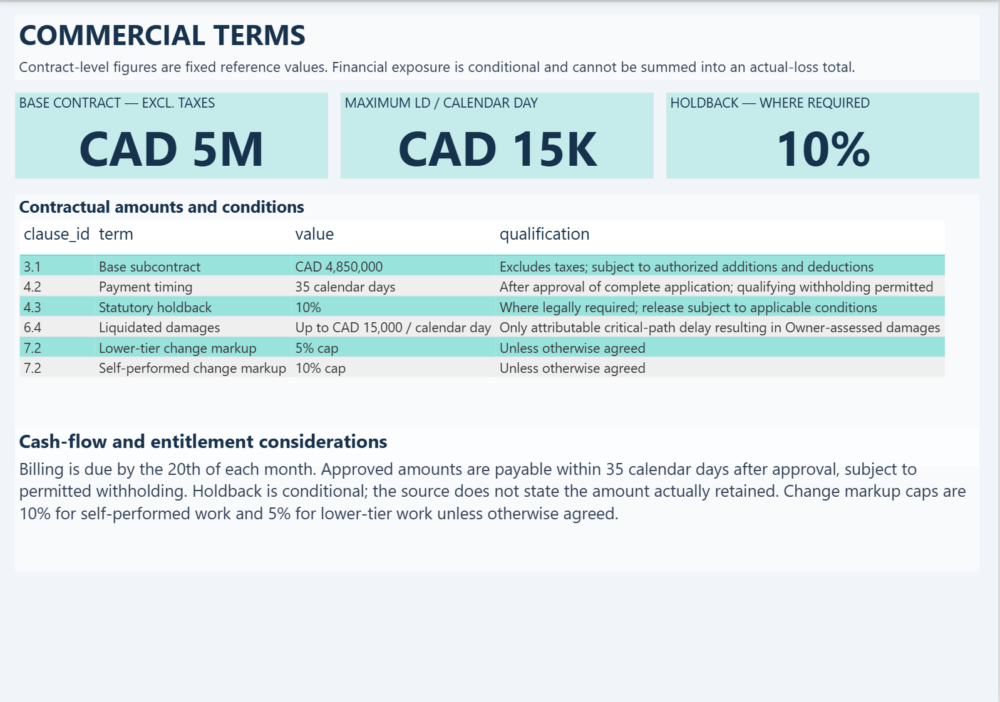
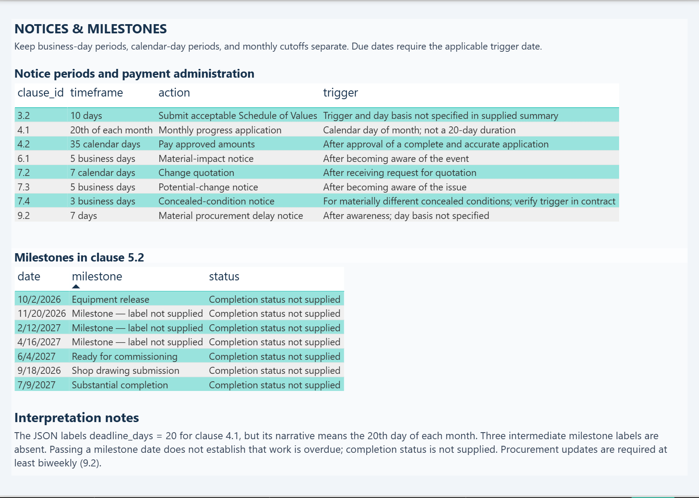
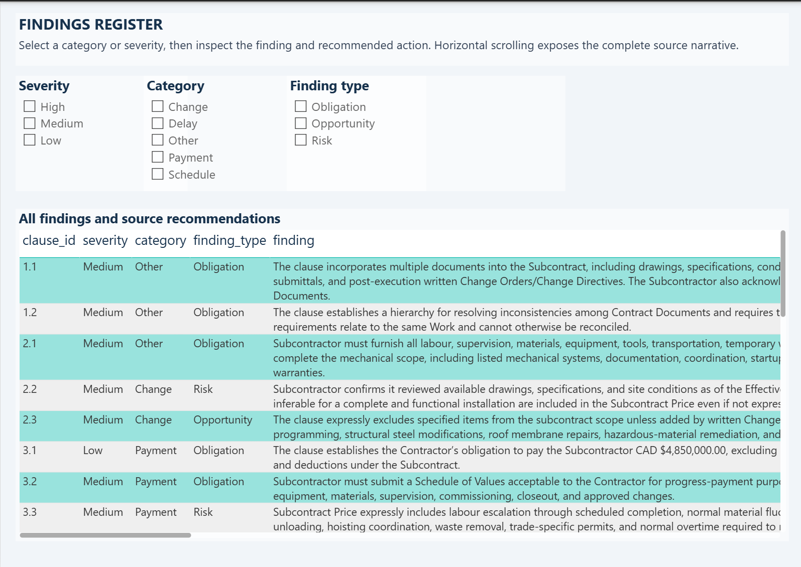

Project Details
This project combines Contract Risk Analyzer V2, a Python-based contract-analysis prototype, with a four-page Power BI report. The analyzer extracts contract clauses and generates structured AI findings; the report transforms a JSON-based subcontract review into a clear view of contractual obligations, risks, opportunities, commercial terms, and schedule requirements.
The review covers a CAD 4.85 million mechanical subcontract. Clause references and source recommendations are retained so project and commercial teams can trace findings, prioritize their review, and understand notice requirements and conditional financial exposure.
Business Objective
Help project and commercial teams prioritize contract findings, understand financial conditions, and track notice requirements without confusing potential exposure with actual losses.
Tools Used
Python, PyMuPDF, regular expressions, Pandas, Pydantic, structured LLM responses, JSON, Power BI, Power Query, DAX, Microsoft Power BI MCP Server, and Node.js.
Contract Analysis Workflow
- Extract PDF text page by page with PyMuPDF, normalize whitespace, and identify sections and clauses using regular expressions.
- Retain clause IDs, titles, source text, section details, page ranges, and document tracking metadata.
- Check duplicate clause IDs, short text, and invalid page ranges, then export source records to CSV with Pandas.
- Analyze one clause at a time using structured LLM responses validated against a Pydantic schema.
- Export findings, recommended actions, deadlines, impacts, and confidence to JSON, linked to source records by clause ID.
- Organize the supplied JSON snapshot into Findings, Deadlines, Milestones, and Commercial terms tables in Power Query.
Key Metrics
- 25 findings: six high, 18 medium, and one low severity; high-severity share is 24%.
- 18 obligations, four risks, and three opportunities across Payment, Schedule, Delay, Change, and Other categories.
- Average source-reported confidence: 95.36%, which is not a probability of financial loss.
- Base contract value: CAD 4,850,000, excluding applicable taxes.
- Conditional liquidated damages: up to CAD 15,000 per calendar day, subject to the contract conditions.
- Statutory holdback: 10%, where required.
- Change markup caps: 10% for self-performed work and 5% for lower-tier work, unless otherwise agreed.
- Eight findings with populated deadline values and seven milestone dates under clause 5.2.
Report Design
The four report pages include an overview with KPI cards, bar charts, and priority clauses; commercial terms with contractual amounts and qualifications; notices and milestones with timing requirements and triggers; and a findings register with severity, category, and finding-type slicers. The deliverable includes four data tables, 12 DAX measures, and 26 visual elements.
Interpreting Contract Timing
Timing values are interpreted using their supporting narrative. The monthly application cutoff is the 20th of each month, rather than a 20-day duration. Approved amounts are payable within 35 calendar days after approval of a complete and accurate application, subject to permitted withholding. Business-day and calendar-day requirements remain distinct, and milestone dates are not treated as overdue without completion information.
Project Status and Source Traceability
Contract Risk Analyzer V2 is a prototype. Source clause text and tracking metadata remain in the clause dataset and CSV; the exported JSON contains AI analysis fields linked by clause ID. Pydantic validates response structure, not the accuracy of the findings.
The semantic model was loaded through Microsoft’s Power BI MCP server, and 36 project files passed JSON schema validation. Visual definitions were subsequently adjusted for an older schema following a Power BI Desktop compatibility error. Final rendering and data refresh remain unverified. Production deployment and production database integration are not claimed.
Contract amounts and rates are reference values, not actual losses, retained balances, or accrued damages. Recommended actions remain review content.